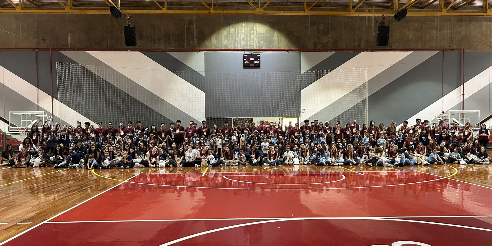
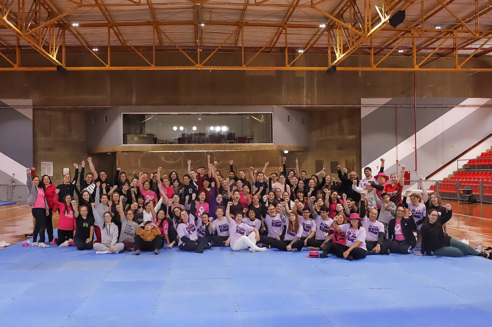

Community
Community participation, volunteer initiatives, and collaborative projects, including Pastoral Juvenil Marista, an Easter action for approximately 120 children, Grupo Poliwomen, and emergency care training.
Pastoral Juvenil Marista
Youth leadership, group activities, and community service
Marista Youth Activities
Our Youth Group does everything from Adoration and Gatherings to Community Outreach and Campaigns. This upcoming weekend (Sept 19th, 2026) we'll be going to Escola Esperança for activities with the kids.
Easter Initiative (120 Children)
Large-scale community organization and volunteer delivery
Coordination & Execution
Outreach Program where we sought to give over 120 children an unforgettable Easter. I participated in coordination and the set up of digital games for one of our activities that day.


Initiatives & Community Training
Collaborative academic networks and specialized community skills
Grupo Poliwomen
Women's group that seeks to unify women from all polytechnic schools.
Defesa Feminina
Oficina de Defesa Pessoal Feminina — “Minha Força, Minha Regra!” na PUCPR.

Primeiros Socorros
Pre-hospital emergency care training (APH) conducted by Corpo de Bombeiros do Paraná.